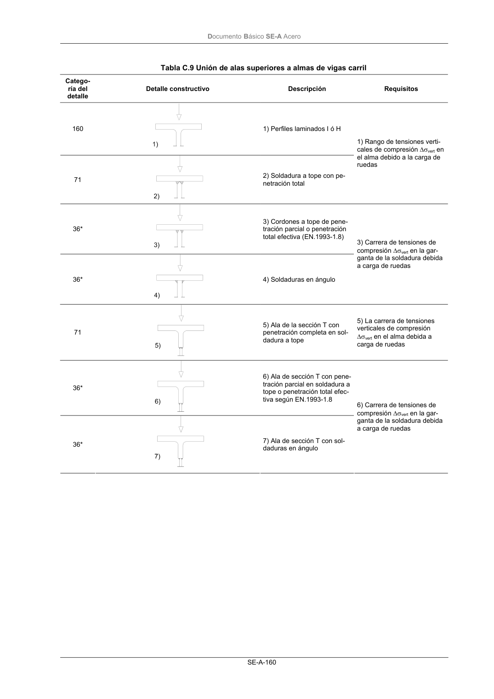

DB-SE-A Acero · edición 2007-10-23 · capa oficial
Documento DB-SE-A-oficial · SHA-256 del PDF 9ed9ea694aabfbda3bfbbef40dfe9223fde05d13c35bc2ba9751e5a96a22a64f
Copia fiel del PDF fuente · Fuente oficial
Ficha de la disposición en la fuente oficial
Formatos: JSON del segmento · Markdown
sección nominal del conector conector 71 11) Junta articulada tubular con 80% de soldadura a tope con penetración total 11) Raíz depositada de la soldadura. ∆τ se calcula en el tubo 40 12) Junta articulada tubular con soldadu- ras en ángulo 12) ∆σ calculado en el tubo DocumentoBásico SE-A Acero SE-A-160 Tabla C.9 Unión de alas superiores a almas de vigas carril Catego- ría del detalle Detalle constructivo Descripción Requisitos 160 1) Perfiles laminados I ó H 71 2) Soldadura a tope con pe- netración total 1) Rango de tensiones verti- cales de compresión ∆σvert en el alma debido a la carga de ruedas 36* 3) Cordones a tope de pene- tración parcial o penetración total efectiva (EN.1993-1.8) 36* 4) Soldaduras en ángulo 3) Carrera de tensiones de compresión ∆σvert en la gar- ganta de la soldadura debida a carga de ruedas 71 5) Ala de la sección T con penetración completa en sol- dadura a tope 5) La carrera de tensiones verticales de compresión ∆σvert en el alma debida a carga de ruedas 36* 6) Ala de sección T con pene- tración parcial en soldadura a tope o penetración total efec- tiva según EN.1993-1.8 36* 7) Ala de sección T con sol- daduras en ángulo 6) Carrera de tensiones de compresión ∆σvert en la gar- ganta de la soldadura debida a carga de ruedas DocumentoBásico SE-A Acero SE-A-161 Tabla C.10 Secciones huecas Categoría del deta- lle Detalle constructivo Descripción Requisitos 71 1) Uniones tubo-placa; tubos aplastados, soldadura a tope (acanaladura en X) 1) ∆σ calculado en el tubo. Sólo válido para diámetros de tubo inferiores a 200 mm 71 α≤ 45º 63 α > 45º 2) unión tubo-placa; tubo ra- nurado y soldado a la placa. Agujeros en el extremo de la ranura 2) ∆σ calculado en el tubo. La fisuración a cortante en la soldadura debe com- probarse usando la tabla 8,5, detalle 8) 71 Uniones a tope transversales 3) Uniones mediante solda- dura a tope, extremo a ex- tremo entre secciones es- tructurales circulares huecos 56 4) Secciones estructurales huecas circulares o rectan- gulares unidas mediante cordones de ángulo Detalles 3) y 4) La convexidad de la sol- dadura ≤ 10% del ancho del cordón, con transicio- nes suaves. Soldado en posición plana, inspeccionado y libre de defectos superiores a las tolerancias UNE-ENV 1090-4:1998 Clasificable en 2 categorí- as más altas si t > 8 mm 71 Accesorios soldados 5) Secciones estructurales huecas, circulares o rectangu- lares unidas mediante cordo- nes en ángulo a otra sección 1) Soldaduras que no transmitan cargas. - anchura paralela a direc- ción de tensiones L ≤ 100 mm - para otros casos véase tabla 8,4 50 Empalmes soldados 6) Secciones estructurales circulares huecas; soldadas a tope, extremo a extremo con una placa intermedia 45 7) Secciones estructurales rectangulares huecas; solda- das a tope, extremo a extre- mo con una placa intermedia Detalles 6) y 7) - Soldaduras portantes - Tras inspección y sin encontrar defectos supe- riores a las tolerancias ENyyy 2 - Clasificable en 1 catego- ría más alta si t > 8 mm 40 8) Secciones estructurales circulares huecas, soldadas a tope, extremo a extremo con placa intermedia 36 9) Secciones estructurales rectangulares huecas, solda- das a tope, extremo a extre- mo con placa intermedia Detalles 8) y 9) - Soldaduras portantes - Espesor de pared t ≤ 8 mm DocumentoBásico SE-A Acero SE-A-162 Tabla C.11 Secciones huecas Catego- ría del detalle Detalle constructivo Requisitos 90 m = 5 0,2 t t i 0≥ 45 m = 5 0,1 t t i 0≥ Uniones con huelgo: detalle 1); juntas K y N; secciones es- tructurales circulares huecas 71 m = 5 0,2 t t i 0≥ 36 m = 5 0,1 t t i 0≥ Uniones con huelgo: detalle 2): juntas K y N; secciones es- tructurales circulares huecas Detalles 1) y 2) Se precisa una comprobación por separa- do para los cordones y las diagonales. Para valores intermedios del índice i 0 t t in- terpólese linealmente entre las categorías de los detalles. Se permiten soldaduras en ángulo para di- agonales con espesor de pared t ≤ 8 mm t0 y ti≤ 8 mm 35º ≤θ≤ 50º b0/t0 . t0/ti≤ 25 d0/t0 . t0/ti≤ 25 0,4 ≤ bi/b0≤ 1,0 0,25 ≤ di/d0≤ 1,0 b0≤ 200 mm d0≤ 300 mm - 0,5 h0≤ li/p≤ 0,25 h0 - 0,5 d0≤ li/p≤ 0,25 d0 eo/p≤ 0,02 b0 ó ≤ 0,02 d0 (eo/p es la excentricidad fuera del plano) Detalle 2) 0,5 (b0 – bi) ≤ g ≤ 1,1 (b0 – bi) g ≥ 2 t0 71 m = 5 4 ,1 t t i 0≥ 56 m = 5 1 t t i 0= Juntas superpuestas: detalle 4): Juntas en N; secciones estructurales circulares huecas 71 m = 5 4 ,1 t t i 0≥ 50 m = 5 1 t t i 0= Juntas superpuestas: detalle 4): Juntas en N; secciones estructurales rectangulares huecas Detalles 3) y 4) 30% ≤ solape≤ 100 % Se precisa comprobación por separado de cordones y diagonales. Para valores intermedios del índice t0/ti in- terpólese linealmente entre categorías de detalles. Se permiten soldaduras en ángulo para di- agonales con espesor de pared t ≤ 8 mm t0 y ti≤ 8 mm 35º ≤θ≤ 50º b0/t0 . t0/ti≤ 25 d0/t0 . t0/ti≤ 25 0,4 ≤ bi/b0≤ 1,0 0,25 ≤ di/d0≤ 1,0 b0≤ 200 mm d0≤ 300 mm - 0,5 h0≤ li/p≤ 0,25 h0 - 0,5 d0≤ li/p≤ 0,25 d0 eo/p≤ 0,02 b0 ó ≤ 0,02 d0 (eo/p es la excentricidad fuera del plano) DocumentoBásico SE-A Acero SE-A-163
